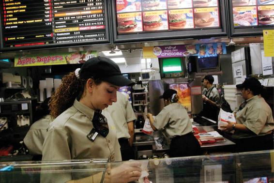
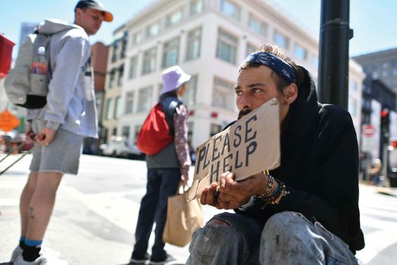

In much of this chapter, we have been concerned with inequality between social classes, yet the fact that there is a gap between those at the top or middle, and those at the bottom does not necessarily mean that people at the bottom are very poor. One could imagine a society in which people at the top of the wealth distribution pay taxes that are high enough to ensure that those at the bottom have adequate resources. Or one could imagine a society in which people at the bottom feel less life satisfaction because they don’t have as much as those above them, while at the same time having adequate resources for education and many of the most important health outcomes.
Therefore, in defining poverty, a distinction is usually made between absolute and relative poverty. Absolute poverty means that a person or family simply can’t get enough to eat, or perhaps does not have access to adequate health care and education. People living in absolute poverty usually do not have access to healthy food or, in situations of famine, may even starve to death. Absolute poverty is common in the poorer developing countries. In many industrial countries, by contrast, relative poverty is essentially a measure of inequality. It means being poor as compared with the standards of living of the majority.
In the United States, there are many people who do not have the basic resources needed to maintain a decent standard of housing and healthy living conditions. In 2018, 38 million people, or roughly 12 percent of the population, lived below the poverty line. The rate of child poverty is even worse; one in six children lives in a household with income levels beneath the poverty line (Semega et al., 2019a). A recent UNICEF study reported that among the 35 wealthiest nations in the world, the United States has the seventh-highest child poverty rate, falling behind countries such as Spain, Mexico, and Romania (World Economic Forum, 2017). The largest concentrations of poverty in the United States are found in the South, inner cities, and rural areas. Among the poor, 18.5 million Americans (or 6 percent of the country) live in extreme poverty: Their incomes are only half of the official poverty level, meaning that they live at near-starvation levels (Stein, 2018). Therefore, the average poverty rate for the country masks major variations from state to state. Relatively well-off states such as New Hampshire, Vermont, Minnesota, and Massachusetts have about half as much poverty as do Louisiana, Mississippi, and New Mexico.
We are the richest democracy and yet we have one of the highest childhood poverty rates in the world. At the bottom of the class system in the United States are therefore the millions of people who live in poverty. Many do not maintain a proper diet and often live in neighborhoods marked by high crime rates, exposure to dangerous environmental conditions, and run-down, dilapidated homes. Poor persons are more likely than their richer counterparts to suffer from every possible health condition, ranging from heart disease to diabetes, and consequently, their average life expectancy is lower than that of the majority of the population. Thus, they experience absolute poverty. But unlike many countries in the developing world where poor people do not see much affluence around them, in the United States the poor are aware of the prosperity around them. Therefore, they must live with both absolute and relative poverty.
Measuring Poverty
What does it mean to be poor in the world’s richest nation? The U.S. government currently calculates a poverty line based on cost estimates for families of different sizes. This calculation results in a strict, no-frills budget, which for a family of four in 2020 works out to an annual cash income of just over $26,200, or about $2,000 a month to cover all expenses (U.S. Department of Health and Human Services, 2020).
What does Newman’s research reveal about the working poor? In 2017, more than 6.9 million Americans were among the working poor. Women are more likely than men to be among the working poor.
How realistic is this standard of poverty? Some critics, including the presidential administration of Donald Trump, believe it overestimates the amount of poverty. They point out that the current standard fails to consider noncash forms of income available to the poor, such as food stamps, Medicare, Medicaid, and public housing subsidies, as well as “under-the-table” pay obtained from work at odd jobs that is concealed from the government (Joint Center for Housing Studies of Harvard University, 2014). Others counter that the government’s formula greatly underestimates the amount of poverty because it overemphasizes the proportion of a family budget spent on food and severely underestimates the share spent on housing. According to some estimates, three-fourths of all U.S. families whose income is $15,000 a year (about what would be earned under the federal minimum wage) are spending more than half of their income on housing (Joint Center for Housing Studies of Harvard University, 2020). Still others observe that this formula dramatically underestimates the proportion of older adults (age 65+) who live in poverty (upwards of 7.2 million), because they spend a relatively small proportion of their income on food yet are faced with high health care costs (Carr, 2010; Cubanski et al., 2018).
The Working Poor
Many Americans fall into the working poor—that is, people who work at least 27 weeks a year but whose earnings are not high enough to lift them above the poverty line. In 2015, 5.6 percent of the labor force was not earning enough to stay out of poverty (BLS, 2017b). The federal minimum wage, the legal floor for wages in the United States, was first set in 1938 at $0.25 an hour. The national federal minimum wage is now $7.25 per hour, although in February 2014, then-U.S. President Barack Obama issued an executive order to raise the minimum wage for federal contract workers to $10.10 an hour. Individual states can set higher minimum wages than that of the federal standard; in 2017 alone, 19 states raised their minimum wage, with the highest hourly minimum wages being in the District of Columbia ($14.00), Massachusetts ($12.00), and Washington state ($12.00). Although the federal minimum wage has increased over the years, it has failed to keep up with inflation; today’s minimum wage is only two-thirds of the 1968 minimum wage, once the effects of inflation are considered (Elwell, 2014b).
In 2017, there were 6.9 million individuals among the working poor. The working poor are disproportionately non-White and immigrant; Hispanics and Blacks are twice as likely as Whites and Asian Americans to fall into this category. Education can make a significant difference in this regard: 13.7 percent of high school dropouts find themselves among the working poor compared to 6.2 percent of workers with a high school diploma, 3.2 percent with an associate’s degree, and only 1.5 with a bachelor’s degree or higher (BLS, 2019a).
Most poor people, contrary to popular belief, do not receive welfare payments; they earn too much to qualify for welfare. Only 5 percent of all low-income families with a full-time, full-year worker receive welfare benefits, and over half rely on public health insurance rather than employer-sponsored insurance. Research on low-wage, fast-food workers further reveals that many working poor lack adequate education, do not have health insurance to cover medical costs, and are trying to support families on poverty-level wages (Newman, 2000).
Poverty, Race, and Ethnicity
Poverty rates in the United States are much higher among most minority groups than among non-Hispanic Whites, even though more than 41 percent of the poor are White (Semega et al., 2019c). As Figure 8.3 shows, Blacks and Latinos experience more than double the poverty rate of Whites. Median household income among Hispanics was 75 percent of Whites’ in 2018; among Blacks, it was only 61 percent (U.S. Census Bureau, 2019c). This discrepancy is because they often work at the lowest-paying jobs and because of racial discrimination. Asian Americans have the highest income of any group, but their poverty rate is also slightly more than that of Whites, reflecting the influx of relatively poor Asian immigrant groups.
The number of Blacks living in poverty has declined considerably in recent years. In 1959, 55 percent of Blacks were living in poverty; by 2018, that figure had dropped to 20.8 percent. A similar pattern holds for Hispanics: Poverty grew steadily between 1972 and 1994, peaking at 31 percent of the Hispanic population. By 2018, however, the poverty rate for Hispanics had fallen to 17.6 percent, including a decline of 2 percent from 2014 to 2015 alone. This decline is possibly because the unemployment rate has also dropped significantly for Hispanics in recent years, although it remains higher than that of Whites (U.S. Census Bureau, Semega et al., 2019c; Proctor, Semega, and Kollar, 2016; Krogstad, 2014).
Much of the growth in poverty is associated with the feminization of poverty, an increase in the proportion of the poor who are women. Growing rates of divorce, separation, and single-parent families have placed women at a particular disadvantage, since it is extremely difficult for unskilled or semiskilled, low-income, poorly educated women to raise children by themselves while also holding down a job that could raise them out of poverty. As a result, in 2018, 39.1 percent of all single-parent families with children under 18 headed by women were poor, compared to less than 7.6 percent of married couples with children (Figure 8.4) (Semega et al., 2019a).
The feminization of poverty is particularly acute among families headed by Hispanic women. Although the rate has declined by about one-third since its peak in the mid-1980s (it was 64 percent in 1985), 38 percent of all female-headed Hispanic families with children still lived in poverty in 2018. A similar proportion (38 percent) of female-headed African American families with children live in poverty; these percentages are considerably higher than those of either White (28 percent) or Asian (29 percent) female headed families (Fins, 2019).
A single woman attempting to raise children alone is caught in a vicious circle (Edin and Kefalas, 2005). If she has a job, she must find someone to take care of her children since she cannot afford to hire a babysitter or pay for day care. From her standpoint, she will take in more money if she accepts welfare payments from the government and tries to find illegal part-time jobs that pay cash not reported to the government rather than a regular full-time job paying minimum wage. Even though welfare will not get her out of poverty, if she finds a regular job, she will lose her welfare altogether, and she and her family may be even worse off economically.
Children in Poverty
Given the high rates of poverty among families headed by single women, it follows that children are the principal victims of poverty in the United States. The United States ranks sixth among the world’s wealthiest nations with respect to its child poverty rate. Nonetheless, that rate has varied considerably over the last 40 years, declining when the economy expands or the government increases spending on antipoverty programs and rising when the economy slows and government antipoverty spending falls. The child poverty rate declined from 27 percent of all children in 1959 to 14 percent in 1973, a period associated with both economic growth and the War on Poverty (1963–1969). During the late 1970s and 1980s, as economic growth slowed and cutbacks were made in government antipoverty programs, child poverty grew, exceeding 20 percent during much of the period. The economic expansion of the 1990s saw a drop in child poverty rates, and by 2002, the rate had fallen to 16 percent, a 20-year low (U.S. Bureau of the Census, 2003).
However, these patterns have reversed in recent years, due in part to the 2008 recession. Studies have found that child poverty surged during the past decade, erasing many of the gains in child well-being made in the last 20 years. Between 2006 and 2010, the child poverty rate rose by more than a quarter, reaching 22 percent—the highest level since 1993. The economic recovery since the recession may have improved the lives of the superrich, but the benefits have not filtered down to the poor. In 2018, 16.2 percent of children in the United States were living in poverty (Semega et al., 2019a).
The economic well-being of racial minority children and children of single mothers is even more dire. In 2018, 10.9 percent of non-Hispanic White children were poor, compared to 29 percent of Black children, 25.1 percent of Hispanic children, and 41 percent of children who lived in a single-mother household (Child Trends, 2019).
The 65+ Population in Poverty
Although relatively few persons age 65 and older live in poverty (9.7 percent), this aggregate statistic conceals vast gender, race, and marital status differences in the economic well-being of older adults. In 2018, older adult poverty rates ranged from just 3 percent among White married men to about 20 percent for Black women who live alone, and more than 20 percent for Hispanic women living alone (Semega et al., 2019b). As we noted earlier, these figures may actually underestimate how widespread older adult poverty is because poverty rates fail to consider the high (and rising) costs of medical care, which disproportionately strike older adults (Carr, 2010).
Because older people have, for the most part, retired from paid work, their income is based primarily on Social Security and private retirement programs. Social Security and Medicare have been especially important in lifting many older adults out of poverty. Yet people who depend solely on these two programs for income and health care coverage are likely to live modestly at best. In 2016, some 41 million retired workers were receiving Social Security benefits; their average monthly payment was just over $1,300 a month. Although Social Security was the main source of income for individuals ages 65 and older in 2016, it accounted for only 34 percent of their total income; most of the remainder came from investments, private pension funds, and sometimes earnings (Social Security Administration, 2016a).
Low-income households in particular are likely to rely heavily on Social Security: The lowest income group of adults 65 and older—the 20 percent with income under $13,500 annually—obtain an average of 81 percent of its income from Social Security benefits, compared to 15 percent for the highest income group. Yet even the combination of Social Security and private pensions results in modest retirement incomes for most people: In 2018, the median income for those 65 and older was $23,696 (Semega et al., 2019b).
A Special Case of Poverty: Homelessness
No discussion of poverty is complete without reference to the people who are traditionally seen as at the very bottom of the social hierarchy, homeless persons. The growing problem of homelessness is one of the most distressing signs of changes in the American stratification system. Homeless people are a common sight in nearly every U.S. city and town and are increasingly found in rural areas as well. Two generations ago, homeless populations were mainly elderly, alcoholic men who were found on the skid rows of the largest metropolitan areas. Today, they are primarily young single men, often of working age.
Because it is extremely difficult to count people who do not have a stable residence (Appelbaum, 1990), estimates of the number of homeless people vary widely. The most recent official government estimate is that on any given night in 2018 more than 553,000 people were homeless in the United States (Henry et al., 2018). About a quarter (24 percent) are chronically homeless. This last number has reportedly declined by as much as a third since 2007, due to an increase in permanent supportive housing for the previously homeless. The fastest-growing group of homeless people, however, consists of families with children, who make up more than a third (33 percent) of those currently homeless. An estimated 40 percent of the homeless are Black, 22 percent are Hispanic, and 1.2 percent are Native American (Henry et al., 2018).
More than half a million people are homeless on any given night in the United States, 60 percent of whom are men.
Sadly, veterans, or the men and women who have served their country in the armed forces, have particularly high rates of homelessness, due in part to work-limiting physical and mental health problems triggered by combat. Nearly 38,000 veterans were homeless on any given night in January 2018, accounting for 9 percent of homeless adults. Many homeless veterans suffer from at least one chronic—and costly to treat—health condition (Haggerty, 2012). Veteran homelessness, like other forms of poverty, varies by race. Approximately 33 percent of all homeless veterans are African American, despite accounting for only 13 percent of the U.S. population. The good news is that veteran homelessness has reportedly declined by more than 48 percent since 2009 (Henry et al., 2018).
There are many reasons why people become homeless. About two-thirds reported having a problem with alcohol at some point during their lives, another two-thirds reported having a problem with drugs at some point, and nearly 60 percent have experienced a mental health problem. Additionally, insufficient income and lack of affordable housing are a lead cause (NLCHP, 2004, 2015). One reason for the widespread incidence of such problems among homeless people is that many public mental hospitals have closed their doors. The number of beds in state mental hospitals has declined by as many as half a million since the early 1960s, leaving many mentally ill people with no institutional alternative to a life on the streets or in homeless shelters. Such problems are compounded by the fact that many homeless people lack family, relatives, or other social networks to provide support.
The rising cost of housing is another factor, particularly in light of the increased poverty noted elsewhere in this chapter. Declining incomes at the bottom, along with rising rents, create an affordability gap between the cost of housing and what poor people can pay in rent. The share of renters paying more than 30 percent of income for rent has more than doubled since the 1960s, from 23 percent to 48 percent (Joint Center for Housing Studies of Harvard University, 2020). The burden of paying rent is extremely difficult for low-income families whose heads of household work for minimum wage or slightly higher. Paying so much in rent leaves them barely a paycheck away from a missed rental payment and eventual eviction (National Low Income Housing Coalition, 2000).
CONCEPT CHECKS
What are the major social class groups in the United States today? Describe at least two ways (other than income) that these groups differ from one another.
Contrast intragenerational and intergenerational mobility.
According to classic studies of mobility in the United States, how does family background affect one’s social class in adulthood?
Describe the demographic characteristics of the poor in the United States.
Why are women and children at a high risk of becoming impoverished?